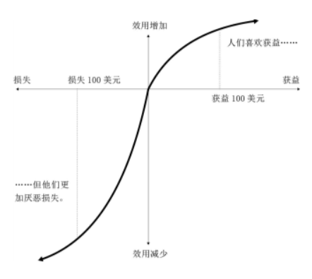

《“错误”的行为》是理查德·塞勒的个人学术自传，展现了行为经济学的大致发展脉络。如果想大致了解他关于行为经济学的主要工作，阅读这本书就可以了。下面整理一下这本书的部分内容。
禀赋效应
经济学家所说的 “机会成本” 指为了这项活动而放弃的其他活动的价值，在现实生活中，机会成本往往是模糊的、抽象的，有时也不会将机会成本等同于实际的现金支出。
有一种现象称为“禀赋效应” ，你拥有的东西属于你的一部分禀赋，与你即将拥有的那些东西相比，你更看重自己已经拥有的东西。人们往往不愿意放弃自己已经拥有的东西，部分原因在于损失厌恶。
经济学家威廉 · 萨缪尔森和理查德 · 泽克豪泽提出了“现状偏见”：如果没有充分的理由进行交换，人们更愿意继续保留自己的物品；有时候即使有充分理由，人们也不愿意放弃自己拥有的东西。
科斯定理认为在交易成本为零的情况下，人们之间可以极其容易地进行交易，此时资源配置的效率是最佳的，资源会被分配到最看重它的人那里。然而，由于禀赋效应，资源并没有按照预期的方式分配。
前景理论和价值函数
前景理论
经济学理论将一个理论既当作规范性理论，也当作描述性理论。前景理论由丹尼尔·卡内曼和阿莫斯·特沃斯基教授提出，前景理论就属于描述性理论，从心理学出发，揭示了不确定性下的决策问题。
价值函数曲线
为了创建一个更好的描述性模型，卡尼曼和特沃斯基意识到应该将注意力放在财富的变化而非财富的等级上，因为人类本身就是通过变化来体验生活的，让我们欢喜或痛苦的都是变化。
我们对现状改变的敏感性会呈现出递减规律，也就是“韦伯–费希纳定律”（ Weber-Fechner Law ），定律指出，对任何变量而言，刚刚可以感觉到的差别与变量的级别是成比例的。心理学家将刚刚可以感觉到的差别称为“最小可觉差”（ JND ）

人们对损失和收益的反应都遵循敏感性递减的规律，这一事实还说明了另外一点：人们会厌恶收益风险，而追逐损失风险。损失函数曲线比获益函数曲线的走势更陡峭：损失曲线的下降速度比获益曲线的上升速度要快。粗略地说，损失造成的痛苦是收益带来的快乐的两倍。
损失造成的痛苦大于收益带来的快乐，这种现象被称为“损失厌恶”（ loss aversion ），它已成为行为经济学家最强大的研究工具之一。所以，我们会通过变化感受生活，我们对损失和收益的敏感性都符合递减规律，而且损失造成的痛苦大于等量的收益带来的快乐。
获得效用和交易效用
获得效用相当于经济学家所说的“消费者剩余”（surplus ）。消费者剩余是指，以物品所带来的效用减去不得不放弃的机会成本之差。
对于经济人而言，获得效用就是最终目的。只要消费者认为商品的价值远高于市场价格，这次交易就会产生大量的获得效用。
但是，普通人还会考虑交易的另一方面：可感知的交易质量，也就是所谓的交易效用。交易效用指的是实际支付的价钱与“参考价格”之差，而参考价格是消费者的期望价格。如果支付价格低于参考价格，交易效用就是正的，即感觉很划算。
交易效用既可能是正的，也可能是负的，也就是说，交易既可能是划算的，也可能让人感觉上当受骗，所以交易效用不仅可以阻止人们购买划算的产品，也会引诱人们购买昂贵的产品，划算的交易也会引诱我们购买没有价值的商品。
卖家会操控参考价格，让消费者产生划算的错觉。将计划制定的最高价格设为“标价”，低于这一价格时则称为“促销”或“打折”。比如标上虚假的“建议零售价”。其实，这只是用来误导消费者的参考价格。
沉没成本
如果钱已经花了，并且无法收回，这些钱就是沉没成本，意思是消失的成本。
“覆水难收”“既往不咎”等成语是经济学家建议我们忽略沉没成本的一些表达。但是，这些建议并不容易遵从。这种错误十分常见，被称为沉没成本谬误”（ sunk cost fallacy ），很多人，甚至是那些在理论上明白这一谬误的人，在现实生活中也很难遵循忽略沉默成本的建议。
如果你买了门票却没有使用，在你的心理账户中这将被认定为损失。如果你去听了音乐会，账户中就不会有损失。同样，对于已买到的产品而言，使用的次数越多，你就会觉得这笔交易越划算。
沉没成本效应会随着时间的推移不断降低，在交易刚完成的那段时间里沉没成本影响比较大，但最后很可能会被忽略。
很多商家会推出会员服务，比如各种视频会员，购物网站会员，我就买了京东会员，可以享受“免”运费的服务。我们通常会把会员年费看作一种“投资”，而没有把这一成本分摊到一年之内所购买的商品上，我们将其看作沉没成本。
“庄家的钱”效应
庄家的钱”效应指出，如果人们在游戏当中居于赢家的位置，他们就更愿意冒险。
输钱的人倾向于以概率很低的小赌注赢大钱（比如抓了一手同花顺）的玩法，但不喜欢可能造成更大损失的大赌注，即使后者翻本的概率更大。
赢钱的人似乎并不把赢的钱当“钱”看。赌徒常说一句话：“用庄家的钱赌。”（“庄家”指的就是赌场。）也就是说，赢钱时，你是拿赌场的钱而不是自己的钱在赌博。
人们在面临巨大损失时，如果有翻本机会，即使他们通常是厌恶风险的，此时一般也都会愿意承担风险。
跨期选择
亚当 · 斯密在《道德情操论》中将自我控制描述成“激情”与“公正的旁观者”之间的挣扎或冲突。激情是缺乏远见的，也就是短视的，“我们 10 年以后享受到的快乐，同我们今天能够享受的快乐相比，其对我们的吸引力极为微小”
经济学家威廉姆 · 斯坦利 · 杰文斯进一步完善了亚当 · 斯密对短视行为的看法。他指出，比起未来的消费，人们对即时消费的偏好会随着时间的流逝而减弱。我们也许更在意现在能吃到一盒冰激凌，而不是明天。
萨缪尔森建立了跨期选择模型，即贴现效用模型，其基本理念是，对你来说，即时消费比未来的消费更具价值。用萨缪尔森的话说，我们在以某一贴现率对未来的消费进行贴现。如果一年后吃顿大餐的效用只是现在的90% ，那么可以说我们未来大餐的年贴现率为10% 。
这种开始时贴现率很高，随后不断降低的现象有个专门的名称，叫作“拟双曲贴现”，也可以用“现状偏见”来形容这种偏好。
委托–代理模型
我们都有乔治·勒文施泰因所说的“情绪温差”（hot-cold empathy gaps），我们在理性、冷静的“低温”状态，体会不到在充满激情和欲望的“高温”状态有何表现。
- 比如当我们处于冷静、沉思的情绪中时，我们会认为这一周都能坚持低热量的健康饮食。
- 但是，周三晚上，当朋友建议去一家新开的以精酿啤酒为特色的比萨店时，我们随即放弃了原来的节食计划，最后吃喝的东西比周日预期的要多
每个人的内心之中有两个自我，
- 一个是具有前瞻性的“计划者”，他关心未来并且有很好的打算；
- 另一个是不顾一切的“行动者”，他只活在当下，行动者不会参与决策。他更像一个活在当下、具有激情的人，他会对摆在面前的事物做出反应，不断消费直到满足为止。
委托–代理模型中，代理人是一组寿命很短的行动者。计划者是奉行利他主义的。她所在意的是一系列可以从行动者那里获得的效用。她希望所有行动者从整体上越快乐越好，但她也要对行动者的行为实施一定的控制，尤其是在行动者的欲望被激起时，比如食欲、性欲、喝酒的欲望，或者天气晴朗时突然想出去闲逛一天。
计划者有两套方法可以用来影响行动者的行为。
- 可以用（金钱或其他方面的）奖惩措施来影响行动者的决定，但同时将决定权留给行动者；
- 还可以实施强制性措施，比如承诺策略，来限制行动者的选择
公平
最后通牒博弈中，一名提议者向另一名响应者提出一种分配资源的方案，如果响应者同意这一方案，则按照这种方案进行资源分配；如果回应者拒绝这一方案，则两人均不会获得任何收益。
现实生活中，我们可能不会像博弈论那样来做决策，主要依赖公平观念而不是利益最大化来进行决策。
大部分人都属于有条件的合作者，也就是说，只在有足够多的人选择合作时他们才愿意合作。博弈开始时，在不知道别人是否会合作的情况下，人们先假设别人会合作，但是如果合作率较低，这些有条件的合作者就会变成搭便车的人。然而，如果参与博弈的人有机会惩罚不合作的人，那么在重复进行博弈时也可以维持较高的合作率。当人们面对不公平的对待时，他们会十分生气，甚至不惜牺牲个人利益去惩罚对方。
金融市场中的反常行为
作者主要对“有效市场假说”进行了辩驳。
有效市场假说包括两个部分：
第一，我们无法跑赢大盘（即没有免费的午餐）；
第二，价格是“合理的”。
格雷厄姆提倡的价值投资法显然与有效市场假说不符，价格并不都是合理的，股价波动很大。因为市场中有很多噪声交易者，理性经济人只会因为真实的信号而改变投资想法，但普通人可能会对那些都不能算作信号的事件做出反应。
最后
当然作者不只包括我上面列出来的研究，他对行为经济学做出了很大的贡献，他基本参与了行为经济学发展的全过程，总结了三点基本经验：
- 细心观察。行为经济学始于简单的观察。
- 收集数据。故事具有较强的说服力，并且很容易让人记住，
- 直言不讳。如果有人愿意告诉老板有些事情不大对头，很多组织中的错误可以轻松避免。
他的另外两本书《赢家的诅咒》和《助推》的研究内容在这本书中有简单的概括，《赢家的诅咒》列举了各种“反常行为”，《助推》介绍了如何更好的帮助人们做出正确的决策。
本文标题:读书笔记 | “错误”的行为
文章作者:hiyo
文章链接:https://hiyongz.github.io/posts/reading-notes-for-misbehaving-the-making-of-behavioral/
许可协议:本博客文章除特别声明外，均采用CC BY-NC-ND 4.0 许可协议。转载请保留原文链接及作者。